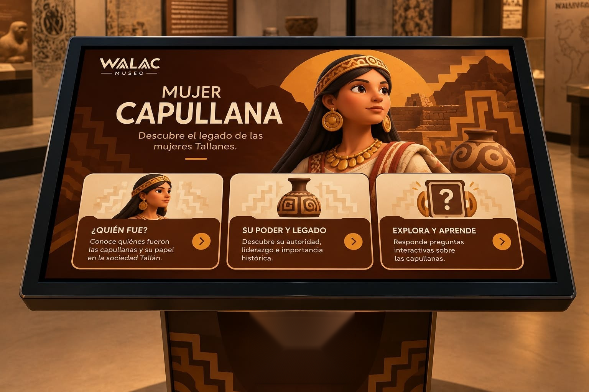
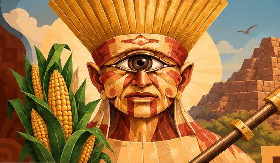
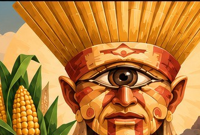

DIOS
WALAC
Conoce al ser que dio vida a nuestra tierra.
WALAC MUSEO · DIOS WALAC01 · CONOCE SU HISTORIA
El misterio de Walac
Walac es una figura vinculada a la identidad cultural de WALAC Museo y a la representación de las creencias ancestrales del territorio Tallán.
Su imagen, inspirada en elementos de la iconografía prehispánica, nos invita a explorar la relación de los antiguos habitantes de Piura con la naturaleza, sus recursos y su mundo espiritual.
Walac es el nombre que da identidad a nuestro museo y representa una conexión simbólica con nuestras raíces.
 WALAC MUSEO · CREENCIAS
WALAC MUSEO · CREENCIAS02 · NATURALEZA Y COSMOVISIÓN
Un mundo lleno de creencias
Para los antiguos Tallanes, la naturaleza formaba parte esencial de su vida. El mar, la tierra, las lluvias y los ciclos naturales influían en sus actividades y en su manera de comprender el mundo.
A través de sus costumbres y expresiones culturales, podemos acercarnos a las creencias que acompañaron a estas comunidades y descubrir cómo se relacionaban con su entorno.
Pregunta interactiva
¿Qué elemento de la naturaleza crees que fue más importante para la vida de los Tallanes?
WALAC MUSEO · SÍMBOLOS03 · EXPLORA CADA ELEMENTO
Los símbolos de Walac
La representación visual de Walac reúne elementos que evocan el mundo ancestral y la relación de los antiguos habitantes con su entorno.
Su tocado, los elementos geométricos y los objetos que lo acompañan forman parte de una interpretación visual creada para WALAC Museo. Explora cada elemento y descubre cómo los símbolos pueden transmitir ideas, representar una cultura y mantener viva su memoria.

Tocado
Observa sus formas y detalles ornamentales. En esta propuesta visual, el tocado destaca la presencia y el carácter ceremonial del personaje.